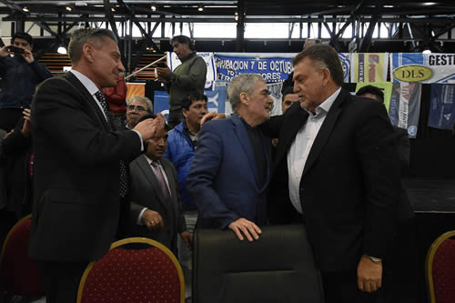
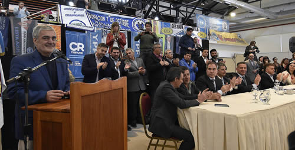
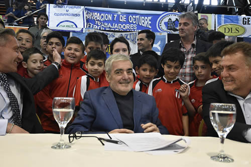
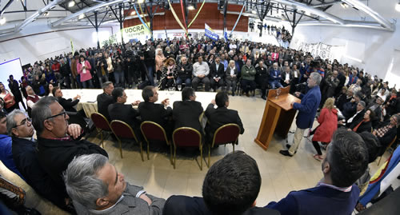

Real Chubut - Agencia de Noticias


Das Neves transfirió a los municipios de Comodoro Rivadavia, Sarmiento y Camarones más de 200 millones de pesos

Fondos del Bono Internacional colocado por Chubut
El mandatario refrendó los convenios a través de los cuales los tres municipios recibirán los fondos del bono para la ejecución de obra pública. Destacó que estamos ante un "profundo cambio" y volvió a reiterar la defesa irrestricta de "todos los trabajadores y los puestos de empleo".
El gobernador del Chubut, Mario Das Neves, este jueves en el marco de un acto realizado en el Centro Cultural de Comodoro Rivadavia firmó las transferencias de fondos por más de 200 millones de pesos a los municipios de la ciudad petrolera, Sarmiento y Camarones.
Acompañaron al gobernador en el estrado principal, el secretario de Vivienda y Hábitat de la Nación, Domingo Amaya; el vicegobernador Mariano Arcioni; los ministros de Economía, Pablo Oca y de Infraestructura, Alejandro Pagani.

Además en representación del intendente de Comodoro Rivadavia, Carlos Linares, que no estuvo presente por estar de viaje en Buenos Aires, estuvieron el secretario municipal de Gobierno, Máximo Naumann, y el secretario de Obras Públicas, Abel Boyero; además de los intendentes de Camarones, Claudia Loyola y de Sarmiento, Ricardo Britapaja.
La ceremonia también contó con la presencia de una gran cantidad de afiliados al Sindicato de Petroleros Privados, la UOCRA, y vecinos en general que se acercaron a saludar al gobernador.
En la oportunidad se firmaron los convenios por los cuales el municipio de Comodoro Rivadavia recibió 10.485.629,51 dólares; la Municipalidad de Sarmiento, 2.735.993,13 dólares, y Camarones 856.681,09 dólares.
Con el dinero se ejecutarán obras de relevancia, fundamentalmente de servicios de red de gas, cloacas, agua, mejoras y embellecimiento de espacios públicos, pavimento, entre otras, que generarán puestos de empleo para el sector de la construcción y reactivación económica y comercial.
"CAMBIO PROFUNDO"
El gobernador al hacer uso de la palabra agradeció a "mi amigo y compañero, Domingo Amaya, que es del interior y ha sufrido muchos años los mismos problemas que sufrimos nosotros, y ahora tiene la responsabilidad nacional".
Remarcó que "por suerte es un funcionario que cuando siempre vamos nos atiende y tiene la mejor predisposición para venir al lugar a ver cuáles son los problemas".
El mandatario indicó que "cuando vamos y golpeamos (al hacer referencia a las gestiones efectuadas en Buenos Aires), porque ustedes saben que no es de ahora, es de siempre, somos parte de ese interior, de una provincia periférica, pero él (por Amaya) es del interior y lo ha padecido, como dirigente político y por ello agradezco su presencia".
Das Neves continúo manifestando que "quiero reafirmar dos cosas, a mis 65 años, no hace dos o tres años que hago política, que ando en la calle hablando con la gente. A veces no es necesario hablar con alguien, sino mirar el rostro, ese rostro de tristeza y de resignación, y de que nunca se puede".

"Llegó el momento del cambio profundo en la Argentina, porque la sociedad está despertando, porque no quiere más que le hablen de pobreza, de indigencia, de las Pymes, de las bondades, de cómo genera trabajo, sino de cómo hay que hacerlo", enfatizó.
"Y yo me pregunto: ¿cuántos funcionarios políticos que llevan más de dos décadas en el poder en las provincias, todavía no han solucionado el problema del agua, de cloacas, energía, del gas?. Nosotros acá tenemos gasoductos, tenemos gas en nuestro interior, cloacas", afirmó.
Señaló que "cuando llegamos allá en el 2003 –y no es que quiero volver para atrás-, tomamos decisiones que estábamos en condiciones de hacerlas, con el recurso humano maravilloso que tiene esta provincia, con la clase trabajadora que no baja los brazos y pelea por su trabajo".
"En aquel momento, cuando me tocó ganar el 9 de noviembre, un mes y un día antes de asumir, teníamos el Banco Provincia, nuestro banco cerrado. Fui a hacer gestiones, primero estaba Prat Gay, después vino Martín Redrado. No fue fácil, porque había una orden de la Nación, que tanto hablan de liberalismo, que 'había que privatizar el Banco porque no lo sabíamos manejar'".
"Dije que no, el Banco es de los chubutense, que íbamos a poner la plata que corresponde, porque si queremos que la producción avance y se extienda a lo largo de 215.000 kilómetros cuadrados de nuestra provincia, precisamos esta herramienta. Y ha demostrado el Banco en estos años que se puede".
"Pero ahí nomás, también nos dijeron 'es hora de devolver la Caja a la Nación, porque no van a poder pagar', y les dije que no solamente íbamos a poder pagar, sino que vamos a trabajar por el 82%. Tenemos el 82% y nunca Nación nos dio un peso a los chubutenses; los jubilados cobran la plata de los chubutenses", remarcó.
Das Neves remarcó que esas "son cosas clave" y añadió que "también, porque me consta, con las obras sociales, es un lujo la obra social que tenemos, 130.000 de los casi 600.000 habitantes de la provincia del Chubut, dependen de esta obra social, y esto lo hacemos con nuestros recursos".
"Hablaban de las Pymes, esos comentarios que ya estamos hartos de conocerlos, que llevan a que digan 'ahora habla el gobernador, tener que venir al atril', y decir esos discursos hipócritas, que no los sentís, porque estás diciendo algo que no se va a cumplir. Yo estoy podrido de esas cosas", expresó el mandatario.

"VAMOS A DEFENDER NUESTROS TRABAJADORES"
"Nosotros vamos a exigir que se respete, que tengamos un país federal, como lo expresan todos los dirigentes que se sientan en todo programa de televisión nacional", sostuvo.
"Se lo digo a nuestra gente, a los textiles" porque "los empresarios que estuvieron décadas llevándose la plata después deciden irse a otra provincia y nos dejan pagando. Eso no es solidaridad, eso como gobernador lo voy a marcar y no como otro gobernador que anda 'carancheando' puestos de trabajo", aseveró.
En este marco Das Neves manifestó que "nosotros vamos a defender a los trabajadores, y a la empresa le vamos a exigir lo que corresponde", al hacer referencia al conflicto en Comodoro Rivadavia con la empresa Guilford.
"No tenemos problemas, y lo saben acá los ministros, basta que haya un problema en una empresa, por más chica que sea, tiene que agarrar el maletín, subirse al avión e ir a solucionar el problema de esa empresa" porque "nos cuesta conseguir empresas, inversión; nos cuesta conseguir puestos de trabajo".
El mandatario indicó que "cada puesto de trabajo que se pierde, es lastimoso ver el derrotero de la gente buscando, tratando de llevar comida a su casa".
"Nos avergüenza, pero tenemos un pueblo trabajador, un pueblo digno, que a mí me da el aliciente para seguir adelante todos los días, y saben todos los chubutenses que no los voy a dejar, así que vamos adelante, vamos Chubut", concluyó el gobernador.
PUBLICIDAD